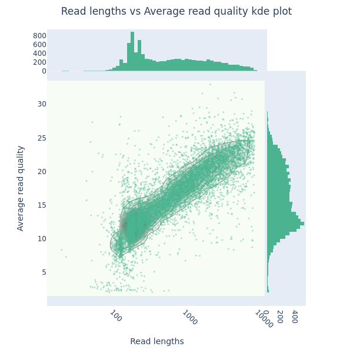
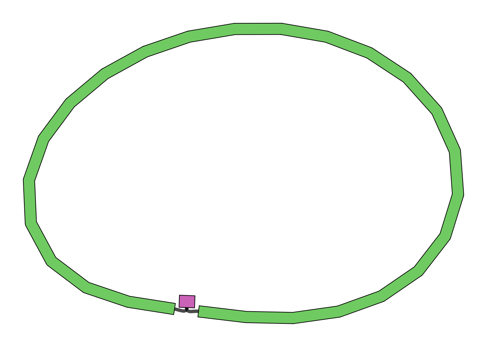

Quality assessment and statistical analysis of raw and trimmed reads, using NanoPlot. Includes both log and non-log plots. The logged read length and quality of the raw reads is below 
Full NanoPlot Report Trimmed Data
Summary of original and trimmed read sets (used for assembly). If the data consists of short fragmented reads, then the assembly will not continue as the long read assembler Flye will fail:
| File Path | # Sequences | Total Length | Min Length | Avg Length | Max Length | Median | N50 |
|---|---|---|---|---|---|---|---|
| Example_bacterial_genome.fastq | 118238 | 191412593 | 5 | 1618.9 | 193350 | 550.0 | 4330 |
| trimmed.fastq | 44433 | 165663912 | 1000 | 3728.4 | 193350 | 2451.0 | 5233 |
Graphical representation of the assembly graph, generated by Bandage:

Functional annotation of the polished assembly using Prokka. This is your annotated genome. If you open the .gbk (GenBank) file in a tool like Geneious, you will see the entire genome with each gene labelled.
Identification by Abricate of potential toxins and antimicrobial resistance (AMR) genes:
| SEQUENCE | START | END | STRAND | GENE |
|---|---|---|---|---|
| contig_1 | 177791 | 178969 | - | cmlR |
| contig_1 | 321320 | 322413 | - | cmlV |
| contig_1 | 1908361 | 1909890 | - | fusH |
| contig_1 | 1929871 | 1931127 | - | mgt |
| contig_1 | 1931124 | 1931906 | - | erm(O) |
| contig_1 | 4400605 | 4401381 | - | aac(3)-IVa |
| contig_1 | 4689308 | 4689916 | - | vanX-Sc |
| contig_1 | 4689913 | 4690953 | - | vanA-Sc |
| contig_1 | 4690964 | 4691977 | - | vanH-Sc |
| contig_1 | 4692072 | 4693265 | - | vanK-Sc |
| contig_1 | 4693456 | 4694448 | - | vanJ |
| contig_1 | 4694652 | 4695348 | + | vanR-O |
| contig_1 | 7752739 | 7754646 | - | otr(A) |
| Chromosome | Length | Bases | Mean Coverage | Min Coverage | Max Coverage |
|---|---|---|---|---|---|
| contig_1 | 8571456 | 172264861 | 20.10 | 1 | 86 |
| total | 8571456 | 172264861 | 20.10 | 0 | 86 |
When the taxon is known, this is indicated. Otherwise, they are left as unknown.
Domain Bacteria
Phylum Actinobacteria
Class Actinobacteria
Order Streptomycetales
Family Streptomycetaceae
Genus Streptomyces
Species unknown
Strain unknown
Report on possible genetic polymorphisms in the assembly. It is very likely some of these calls are due to misassembly, so care should be taken in interpretation. They may also truly indicate contamination or non-clonality. It is strongly recommended that regions in which polymorphisms are inferred are checked for coverage by generating files with minimap2 and visually examining in Geneious or IGV. Unexpected variation in coverage may indicate assembly errors. This output is generated using the –polymorphism mode in breseq:
Possible Polymorphism HTML Report
After assembly, raw reads are mapped back to the assembly. Many of these do not map (and were not used in the assembly). To understand the source of extraneous reads, taxonomic classification of them is done using Kraken2. Often these reads are human contamination, but they can also be from other contaminants (e.g. other bacterial strains). Columns in the report are:
% reads assigned to a taxon and all subtaxa;
Number of reads assigned to that taxon and all subtaxa;
Number of reads assigned to that taxon (excluding subtaxa);
Rank (‘P’ phylum, ‘C’ class, ‘O’ order, ‘F’ family, ‘G’ genus, ‘S’ species);
NCBI Taxonomy ID;Scientific name.
This is an interactive visualization of the Kraken2-classified unmapped reads:
Summary report aggregating results from multiple bioinformatics tools including depth (MosDepth), Samtools flagstat, and Kraken2 brief summary:
Software versions used during the analysis:
Snakemake: 7.32.3
Python: 3.11.6
Filtlong: v0.2.0
Seqkit: v2.4.0
Flye: 2.9.3-b1797
Bandage: 0.8.1
Medaka: 1.11.1
Prokka: 1.14.5
Breseq: 0.38.3
Minimap2: 2.26-r1175
Kraken2: 2.1.3
Mosdepth: 0.3.4
R: 4.3.2
Perl: 5.34.1
Report generated by Auckland Genomics on Mon May 19 17:56:49 NZST 2025
Empowering Breakthroughs Through Genomics